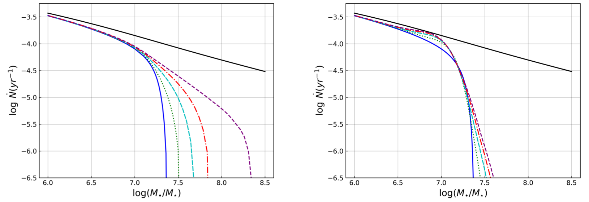

Tidal disruption events

When a star wanders too close to a supermassive black hole (SMBH), it is torn apart by the tidal forces of the black hole. Such an event results in debris around an SMBH, which may accrete onto the SMBH while forming an accretion disk. The interaction between a star and the SMBH is violent and emits bright flares across the electromagnetic spectrum, mainly observed in X-ray and UV/Optical surveys. These events are called Tidal Disruption Events (TDEs), and their observed properties are highly dependent on the SMBH's mass and spin and the orbital properties of the star that interacts with the SMBH. Some of the observational features that depend on these properties are: Lense-Thirring precession, bolometric radiative efficiency, Bardeen-Petterson effect, relativistic jets, quasi-periodic oscillations, etc.
TDEs are multi-messenger transients, responsible for electromagnetic flares along with potentially launching relativistic jets, high-energy neutrinos, cosmic rays, and are proposed as gravitational wave sources. They are different from other galactic nuclei activity in the sense that they last for weeks to years and can serve as a probe to study quiescent SMBH growth. They can potentially answer our questions about SMBH spin and mass distributions and dynamics of stars in the densest galactic regions.
My Research on TDEs
My research primarily focuses on the black hole spin implications on TDEs. In my first publication, we discussed how the axisymmetric Kerr metric (which describes spacetime around a spinning SMBH) changes the conditions for disruption of a solar star as compared to the spherically symmetric Schwarzschild metric (non-spinning SMBH). This introduces an important parameter along with the spin of the SMBH: the inclination angle of the stellar orbit with respect to the spin of the SMBH. We then calculated inclination biases and found that the prograde orbits (orbits with angular momentum in the direction of the SMBH spin) are more likely to get disrupted as compared to the retrograde orbits (orbits with angular momentum opposite to the SMBH spin). This is well-documented lore (reaffirming the results of previous studies), but depending on the diffusion efficiency of the refilling processes, this prograde bias can be reduced or even reversed. The two-body scattering near the influence radii, which refills the stellar orbits that are disrupted, essentially determines the inclination biases we'd observe. We then calculated the inclination biases for the extremal cases of this diffusion's efficiency. We finally calculated the total disruption rate of stars around SMBHs and found that the diffusion efficiency assumptions can change the total disruption rate substantially depending on the SMBH mass and spin, as shown in the figure below.

For more details and discussion, you can find the published paper here "Distribution of orbital inclinations for tidal disruption events by Kerr black holes", PRD (2024, February - Tamanjyot Singh and Michael Kesden) or you can find the arXiv version here arXiv:2306.08054.
Future Work
While we don't directly observe inclinations in TDE candidates, inclination leaves certain imprints on the observables. I am interested in working on a follow-up paper to discuss the implications of the inclination biases on the observed properties of TDEs. The primary goal is to study the effects of the SMBH spin and stellar inclinations on the TDE accretion disk properties, relativistic jets launched during TDEs, and other observational features of TDEs. This follows the broader theme of my research, which is to understand the observational imprints of the spin of black holes on various astrophysical phenomena.